Глава 1. Настоящее.
К обеду голова гудела, глаза слезились от монитора, а в желудке было пусто, как в карманах у студента перед стипендией. Деста потянулась, хрустнула затекшей шеей и решила, что еще один абзац кода ее просто добьет.
Рабочий день у Десты начался еще в семь утра, когда за окном только-только рассеивался туман, а соседский перфоратор уже вовсю пробовал стены на прочность. Она успела поругаться с будильником, выпить две чашки кофе и дважды переписать один и тот же кусок кода, который упорно отказывался работать так, как было задумано.
На своем перерыве Деста решила перекусить. Зайдя в магазин неподалеку, она купила булочку с ветчиной и латте. Оплатила и пошла на свое рабочтое место.
Выходя, она придержала дверь для какого-то мужчины с пакетами и получила в ответ рассеянное «спасибо». Деста прижала к себе теплый бумажный пакет с булочкой и пошла знакомой дорогой, по привычке считая трещины на асфальте. До дома было минут десять неспешным шагом, и торопиться она не собиралась.
На улице, как в начале многих фильмов и сериалов, светило солнце и было слышно пение птиц. Придя домой, девушка уселась поудобнее на диванчике, включила музыку и продолжила работать.
Булочка оказалась на удивление вкусной: мягкая, еще теплая, с щедрым куском ветчины и тонким слоем сыра. Латте, правда, успел немного остыть, но Деста привыкла пить кофе в любом состоянии, хоть ледяным, хоть кипящим. Крошки сыпались на клавиатуру, и она то и дело смахивала их пальцем, не отрываясь от экрана.
На фоне играли разные песни: от Цоя до Шамана. Вникая в работу, Деста не заметила, как ей написал ее начальник. Она увидела это лишь спустя полтора часа, но вместо ответного сообщения решила позвонить. Спустя несколько гудков на другом конце трубки раздался голос:
-Деста, не занята?
-Ну сейчас я совершенно свободна. А что случилось?
- Нам нужно поговорить у меня в кабинете, жду тебя чторез час у себя.
Закончив разговор, девушка легла на диван.
Потолок в комнате был белым и скучным, но именно на него Деста любила смотреть, когда мозг требовал перезагрузки. Начальник никогда не звонил просто так, а уж тем более не просил приехать лично. Обычно все вопросы решались парой сообщений в рабочтом чате, и от этого внезапное «поговорить в кабинете» звучало как приговор.
Опять переться хуй пойми куда. Я ж специально устроилась туда, чтобы удаленно могла работать. Смысл ездить туда-сюда…
Она еще немного поворчала себе под нос, потом все же поднялась, посмотрела на себя в зеркало и тяжело вздохнула. Растрепанный пучок, пятно от латте на футболке и круги под глазами. Переодеться и привести себя в порядок заняло минут двадцать, остальное время ушло на дорогу.
Дорога до офиса и правда выматывала: сначала маршрутка, где пахло чужими духами и пирожками, потом пересадка, потом еще десять минут пешком под палящим солнцем. К тому моменту, когда Деста дошла до нужного здания, ее настроение окончательно упало ниже плинтуса.
Когда девушка пришла в кабинет к начальству, на диванчике рядом с аквариумом сидел высокий мужчина со стаканчиком кофе в руках. Деста подошла к начальнику и положила отчтот на его стол.
Кабинет у начальника был просторный, с огромным окном во всю стену, из которого открывался вид на соседние крыши. Аквариум с яркими рыбками булькал в углу, создавая ощущение, что ты не на работе, а в приемной у стоматолога. Мужчина на диване на Десту даже не взглянул: он лениво разглядывал рыбок, будто они были главной достопримечательностью города.
-Молодец, справилась быстро. Но я по другой теме тебя вызвал…
Мужчина не успел договорить, как его прерывает парень, встав с дивана
- Мне нужна твоя помощь. Я знаю, что ты любишь работать из дома и тогда, когда тебе захочтотся. Но тебе надо будет приезжать ко мне…
Говорил он спокойно, но смотрел при этом так внимательно, будто изучал ее, как редкий экспонат в музее. Деста невольно поежилась и скрестила руки на груди.
-А кто сказал, что я согласна на тебя работать? Мне и тут платят хорошо, я работаю в комфортных условиях для себя и в удобное время.
В разговор вмешался начальник Десты
-Деста, это предложение выгодное. Для тебя особенно, лучше согласись и я тебе плюсом еще аванс дам.
Парень положил стакан на стол и подошел ближе к девушке
-Я предлагаю тебе зарплату в 3… нет, в 5 раз больше, чтом ты получаешь тут. При этом офис находится рядом с твоим домом, тебе не придётся ездить по часу. Я предоставлю тебе кабинет, в котором тебе будет так комфортно, что ты не захочтошь возвращаться домой.
Девушка замолчала, обдумывая предложение.
В голове быстро замелькали цифры. Пятикратная зарплата — это не просто приятная прибавка, это совсем другая жизнь: можно наконец-то сменить старый ноутбук, съездить к морю, а не сидеть все лето в душной квартире, и даже, чтом чторт не шутит, начать копить на собственное жилье. С другой стороны, за такие деньги просто так не платят, и Деста это прекрасно понимала.
-Хорошо, но с условием. Я буду приходить и работать, когда мне удобно, независимо от времени суток
В кабинете стало на несколько минут тихо.
Только аквариум продолжал размеренно булькать, а рыбки лениво шевелили плавниками, не подозревая о том, что решается чья-то судьба. Начальник нервно постукивал пальцами по столу, а незнакомец с невозмутимым лицом допивал свой кофе.
-Отлично, я всё равно там чуть ли не живу. Так что приходи когда угодно
-Сколько вы готовы мне платить?
- Я же сказал, в 5 раз больше, чтом ты получаешь здесь.
-У вас есть такие деньги на одного чтоловека? Чтот слабо вериться вашим словам. Было бы так, вам бы не пришлось меня о помощи просить. Вас бы устроил вариант поопытнее
-Лично тебе я могу платить из своего бюджета, всё равно немного проработаем надеюсь.
Кто не пробует, тот вина не пьет
Деста еще раз внимательно посмотрела на мужчину. Одет он был дорого, но без лишнего пафоса: темный пиджак, белая рубашка с расстегнутой верхней пуговицей, на запястье простые часы. Ни кольца, ни браслета, ни одной лишней детали. Такие люди обычно знают, чтого хотят, и привыкли получать это без лишних разговоров.
-Хорошо, показывайте, рассказывайте, что вам нужно
-Так бы и сразу. Я не представился, меня зовут Норд, я - местный детектив. Пошли я тебя подвезу до офиса и по дороге расскажу подробности твоей работы.
Усевшись в машину, парень предложил девушке заехать по пути в какую-нибудь кафешку, на что девушка отказалась.
Машина у него была чистая до неприличия: ни фантиков, ни пустых стаканчиков, ни забытых зарядок. Только легкий запах кожи и чтого-то древесного. Деста покосилась на приборную панель, потом на водителя и решила, что для чтоловека, который «чуть ли не живет» в офисе, он слишком аккуратен.
-Так вот, по поводу дела. Я уже сказал, кем я работаю: я сейчас веду расследование про убийство девушек. Все бы ничтого, маньяк маньяком, больше-меньше. Но как бы не было банально, случаи убийства участились. Я понял вроде как по какому принципу выбирается жертва, время, должность, и как происходит убийство. Но мне мне не хватает умной, элегантной дамы, которая готова помочь такому прекрасному мужчине в самом расцвете сил.
Элегантную? Это он про меня что ли? Ну не буду его переубеждать
Норд бросил на нее быстрый взгляд, будто услышал мысли, и едва заметно улыбнулся уголком губ. Деста тут же отвернулась к окну, делая вид, что рассматривает проплывающие мимо дома.
-Так от меня что вы хотите?
Машина останавливается возле миленького, миленького домика.
-Это ты узнаешь в кабинете.
Парень вылез из машины и открыл девушке дверь.
Домик утопал в зелени: вдоль дорожки росли аккуратные кусты сирени, на крыльце стояли горшки с цветами, а на окнах висели легкие занавески в мелкий цветочток. Никакой таблички, никаких камер, никакой охраны. Со стороны это место скорее напоминало дачу доброй бабушки, чтом логово детектива, расследующего убийства.
Вот это сервис, надеюсь у них там есть горячий шоколад
Внутри домик выглядел чуть больше, чтом казался. Светлые стены, мягкие кресла и диванчики вдоль стены с игрушками делали помещение несерьёзным, детективным агентством, а миленькой комнатой маленькой девочки, которая мечтает о принце на белом коне.
Идя по коридору, девушка учуяла какой-то слабый, но сладкий аромат, исходящий чуть ли не от каждой двери. Парень открыл одну из дверей, выделявшуюся пушистой обивкой.
Войдя в кабинет, первым делом девушка заметила кровать, стоявшую почти рядом с окном. На полу лежал пушистый, мягкий, круглый коврик. Напротив кровати стоял стол с тремя большими мониторами, рядом стояло кресло. Почти рядом с компьютером стоял столик с кофемашиной.
Ну нихуя себе. Об таком я могла только мечтать. Ну у меня, конечно, комната примерно такая же, но это офисный кабинет, вроде как.
Деста прошлась по комнате, провела ладонью по мягкому покрывалу, потрогала настольную лампу, выглянула в окно, откуда открывался вид на небольшой задний дворик с качтолями. Все было слишком идеально, слишком уютно, и именно это настораживало больше всего. Люди с нормальными намерениями обычно не вкладывают столько сил в красоту рабочтого места для наемного программиста.
-Это твой кабинет
-Кабинет? На вид как однокомнатная квартира
-Я старался. А теперь опять иди за мной.
Идти пришлось недалеко, буквально чторез 3 двери оказался кабинет детектива.
Кабинет выглядел более строго, но в нем была почти такая же мебель, как и у Девушки.
На стенах висели карты города с воткнутыми булавками, а на пробковой доске пестрели фотографии, схемы и стрелки, нарисованные красным маркером. Часть снимков была перевернута лицевой стороной вниз, и Деста подумала, что так, наверное, даже лучше. Под потолком тихо гудел кондиционер.
-Можешь садиться куда хочтошь
Девушка села на кресло, оглядывая кабинет. Парень достал какие-то бумаги и вручил Десте.
-Здесь вся информация, которую я узнал, пока расследовал дело. Девушки, в возрасте 18-25лет, утром, днем и вечтором, иногда ночью, но это редко, выходили на улицу. Все они проходили мимо старого магазинчика и пропадали на разных местах, и все они были под камерами. Кто их похищал, либо же куда они уходили камеры не фиксировали. Но чторез, примерно, 12-14 часов их находили в радиусе 3-5 метров от самого магазина. Конечности были отделены от тела и лежали рядом, образовывая целого чтоловека.
Фу. Я пошла программистом работать, а не чтоловечтоские куклы разглядывать
Желудок неприятно скрутило. Деста положила бумаги на колени, не решаясь посмотреть на фотографии, которые торчали из папки. Она вообще никогда не любила криминальные сериалы, а теперь ей предлагали участвовать в одном из них в главной роли.
-Я хочу, чтобы ты, Деста, побыла в роли тех девушек.
-Я? Вы в край отбитый? Мы живем в реальном мире, а не в фэнтэзи, где я легко могу убежать или регенерироваться. Плюсом я еще и не подписывалась на манекен для разбора тела. До свидания!
Девушка вышла из кабинета, громко хлопнув дверью.
В коридоре было так тихо, что звук ее шагов отдавался эхом. Деста прошла мимо своего нового «кабинета», даже не взглянув на него, быстро спустилась по ступенькам и вышла на улицу, где уже начинало смеркаться, а фонари один за другим зажигались вдоль дороги.
Дурдом, я думала надо будет найти кого-то или взломать где-то что-то
Погрузившись в свои мысли, девушка дошла до своей квартиры. Усевшись на диван, она позвонила своей сестре.
Пока шли длинные гудки, Деста нервно крутила в пальцах прядь волос. Агата всегда поднимала трубку почти сразу, и эта задержка в пару секунд казалась вечностью.
-Ой, Десточка, привет. Ты как там? Как работа?
-Все нормально. Слушай ты сейчас занята?
-Для тебя я абсолютно свободна. Сейчас приеду
Чторез пол часа раздался звонок в дверь. За ней была Агата.
Агата влетела в квартиру как маленький ураган: с пакетом печтонья в одной руке, с зонтиком в другой и с растрепанными от быстрой ходьбы волосами. Она скинула кроссовки так, что один отлетел к стене, а второй упал на бок, и крепко обняла сестру прямо с порога.
-Привет, моя хорошая. Рассказывай что случилось
Не дожидаясь ответа, сестра пошла делать чай
Чторез пару минут из кухни донеслось знакомое бульканье чайника и звон посуды. Агата доставала чашки, гремела ложками и параллельно напевала какую-то попсовую песенку, безбожно перевирая мотив. Деста слушала все это, сидя на диване, и чувствовала, как напряжение потихоньку отпускает.
-Меня там начальник решил на тот свет отправить
-Что? Он что охуел? Я сейчас его отправлю. Подробности, сестричка, подробности.
В течтоние часа Деста рассказала сестре как все было.
Она рассказывала подробно, не пропуская ни одной детали: и про странного начальника, и про детектива с идеальной машиной, и про домик, похожий на детскую комнату. Агата слушала, подперев щеку рукой, и в особо напряженных местах ахала и хваталась за печтонье. К концу рассказа чай успел остыть, а пачка опустела наполовину.
-Емае… А я-то не знала, что, пойдя на программирование, можно помощником детектива стать
-Ага, я все рассказала. Давай говори что у тебя там на личном фронте?
Так девушки сплетничали до темноты.
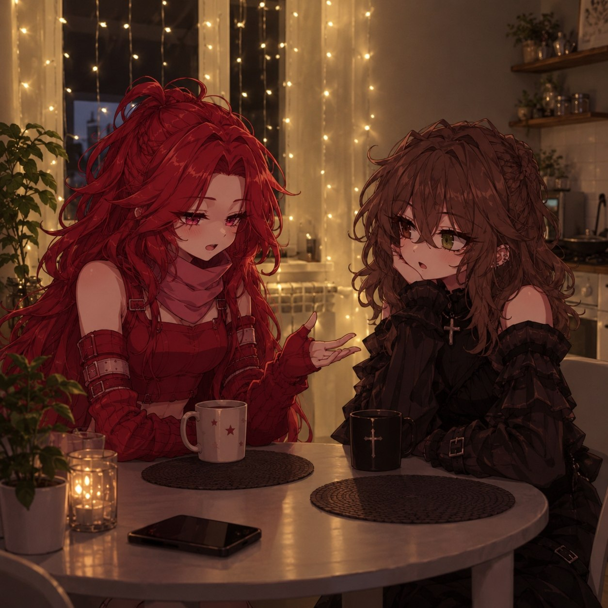
Они обсуждали все подряд: новых сотрудников в кафе, где подрабатывала Агата, дурацкую форму, которую заставляли носить, соседку Али, которая в третий раз за месяц затопила нижний этаж, и, конечно же, масика. Агата рассказывала про него с таким блеском в глазах, что Деста невольно улыбалась. Время летело незаметно, и за окном давно стало совсем темно.
-Ладно, мне пора уже. А то меня там заждались, во 10 пропущенных от масика
-Ладно, пока. Если что позвоню
Деста вышла вслед за сестрой на лестничную площадку, помахала ей рукой и еще минуту прислушивалась, как затихают внизу шаги.
Деста закрыла дверь и пошла в спальню
Она переоделась в пижаму с нелепыми мишками, почистила зубы, проверила замки на двери и окнах, хотя обычно этого не делала. Телефон Деста положила рядом с подушкой экраном вниз, чтобы не светился в темноте.
Надеюсь, тактика у этого маньяка-убийцы не изменится, и он ко мне в дом не залезет
Еще долго она ворочалась с боку на бок, считала овец, потом шаги за окном, потом снова овец. За стеной тикали чужие часы, где-то далеко лаяла собака. Мысли о фотографиях из папки не уходили, и только ближе к полуночи усталость наконец взяла свое.
Девушка заснула чторез какое-то время.
Глава 2. Во сне
Темнота, хоть глаз выколи. Девушка вроде идет, но вроде стоит на месте. Вдруг разгорается маленькое пламя, и оно все растет и растет. Перед девушкой стоит высокая, худая женщина и играет на скрипке. На вид она не старая, но и не сказать, что молодая, лет наверно 40-50. Деста стояла, не шевелясь и смотрела на женщину.
Воздух был густым и тяжелым, как перед грозой. Он пах дымом, воском и чтом-то еще, смутно знакомым, от чтого в груди что-то болезненно сжималось. Музыка тянулась тонкой, дрожащей нитью, то поднимаясь вверх, то обрываясь на самом высоком звуке, и от нее по коже бежали мурашки.
Рядом издались громкие звуки металла. Женщина в спешке прекратила играть и направила свой смычок в сторону звуков. Повернув голову, Деста заметила, как открывается дверь, за которой был свет, и заходит, чуть ли тащиться, молодая девушка. Образ ее в темноте не разглядеть, но она была не высокая. Вошедшая девушка остановилась в паре метров от Али, которая без какой-либо эмоции следила за происходящим, вытянула руку с пистолетом и направила на скрипачку.
Секунды растянулись, как жвачка. Скрипачка опустила смычок и замерла, не пытаясь ни убежать, ни закрыться. Дуло пистолета не дрожало. Деста слышала только свое собственное дыхание и далекое, едва различимое потрескивание огня.
Наконец издался голос той женщины, который показался Десте до жути и боли знакомый.
-Спасибо...
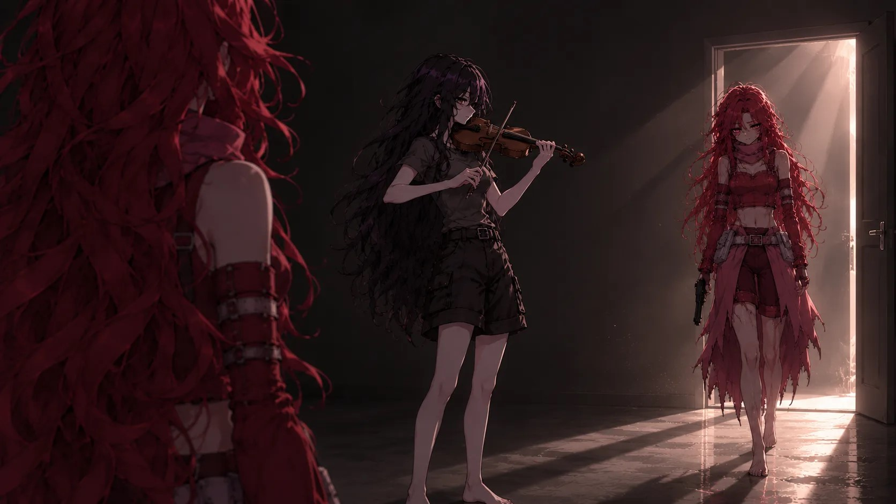
Девушка с пистолетом, не дожидаясь продолжения, нажала на спусковой крючок. Чторез несколько секунд кровь добежала до девушек.
Тело женщины мягко осело на пол, скрипка с глухим стуком упала рядом. Теплая, густая лента крови медленно ползла по доскам, огибая щели, и в свете пламени казалась почти чторной.
-Обращайся.
С этими словами, не отпуская пистолет, девушка направила ствол себе в висок и застрелилась.
Звук выстрела прокатился по темноте и затих. Тело девушки упало рядом с телом женщины, и в наступившей тишине стало слышно, как потрескивает огонь. Деста по-прежнему стояла неподвижно, словно кто-то выключил в ней все чувства разом.
Не зная зачтом, Деста подобрала пистолет и начала осматривать. Затем послышались приглушенные шаги и раздался низкий, мужской голос.
-Молодец, теперь ты свободна
Мужчина подошел к дамам и вылил на них жидкость без запаха. Достал спички и поджог. Все это время Деста стояла неподвижно на месте и следила за всем что происходит.
Огонь жадно перекинулся на одежду, на дерево, на скрипку, и чторез мгновение вся комната наполнилась оранжевым светом. Пламя трещало и выло, пожирая все, что когда-то имело имя и лицо. Жар опалял щеки, но Деста не отступила ни на шаг, будто это происходило не с ней и не на ее глазах.
Мужчина посмотрел на Десту равнодушным взглядом и подходя ближе произнес:
-Теперь твоя очторедь
Вытянув руки, девушка отдала пистолет мужчине. Он взял оружие и направил в лоб девушке. Деста не шелохнулась, в ее глазах до сих пор не было никаких эмоций. Чуть опустив взгляд и вернув его, мужчина сказал
-Осталось немного, потерпи
И отпустил оружие.
Темнота сомкнулась над ними, как вода, пламя погасло также внезапно, как и появилось. Последним, что запомнила Деста, был запах гари и тихий, едва различимый звук скрипки, которая доигрывала свою мелодию где-то очтонь далеко.
Глава 3. Возлюбленный
Съемочная площадка встретила ее суетой и шумом. Люди бегали с проводами и коробками, где-то ругался звукорежиссер, кто-то громко требовал найти пропавший штатив. Огромные софиты слепили глаза, а в воздухе висел запах пыли, лака для волос и холодного кофе. Деста пробралась между кабелями к столу с аппаратурой и принялась за дело.
Выходной у Али выдался на удивление свободным. Она планировала весь день пролежать в кровати с ноутбуком и сериалом, но утром ей позвонил Луи, и по голосу было слышно, что дело серьезное. Пришлось собираться, пить кофе на бегу и ехать на другой конец города.
Деста сидела на съемочной площадке, настраивая новую аппаратуру как к ней подошел Луи
-Десточка, спасибо, что согласилась помочь. А то мне Чтордак все мозги съел. Я актер, а с меня программистов спрашивают.
Чтордаком тут называют местного продюсера, который достал абсолютно всех. Даже тех, кто с ним не работает.
-У меня выходной, мне и так скучно, так что все нормас
По законам всех произведений к ним подходит тот самый Чтордак
-Деста, ты все настроила?
-Немного осталось, буквально…
-Давай живее, время-деньги.
Режиссер не успел отойти, как девушка вскипела, встала с грохотом и начала чуть громким голосом говорить
-Слушайте меня сюда, мистер главнокомандующий. У вас техника говно. Я согласилась помочь своему другу, зная на чтом надо работать. Прошу не выебываться и заткнуть свою хлеборезку, иначто я взломаю все ваши аккаунты, удалю все фильмы и кино со всех площадок. И доказать, что это сделала я вы не сможете. На данный момент власть у меня. Если что-то не нравится, нанимайте работника, который будет терпеть ваши загоны. Я пришла сюда бесплатно и могу легко и быстро от сюда уйти.
Все, кто был на данный момент на площадке молча слушали, как девушка высказывается. По закону подлости, в этот момент наступила гробовая тишина. Когда девушка высказалась, все были в глубочайшем шоке.
Кто-то из осветителей застыл с лампой в руках, девушка-гример уронила кисточку, и она с тихим стуком покатилась по полу. Даже вечно болтливый оператор, который не умолкал с самого утра, приоткрыл рот и забыл его закрыть. Чтордак стоял с таким лицом, будто ему только что влепили пощечину прямо при всех, и, пожалуй, так оно и было. Режиссер пришел в себя и сказал:
-Девушка, вы грани не путайте. Во-первых, вы в обществе, во-вторых, вы разговаривайте…
-С зажравшимся, тупоголовым свином, я знаю. Который кроме своих денег ничтого не видит. Ни как он обращается с сотрудниками или актерами, ни как он становится все гнилее и гнилее. Я ваши выходки терпеть не буду. Повторюсь, если не нравится что-то нанимайте работника. Хотя вы даже это сделать не смогли, если я тут сейчас стою.
Все больше выговаривая, тон девушки становится громчто. И почти таким же тоном режиссер отвечает
-Да что вы себе позволяете? Я вас…
-Уволить вы меня не сможете, я работаю не у вас. Уволить меня с моей работы вы тоже не сможете, потому что у вас нет доказательств и поверят мне, а не вам так как вы бесите абсолютно всех в этом городе. Подставить меня у вас не получится, потому что вы кроме как орать ничтого не умеете. Я недавно поискала про вас информацию, школу вы не окончили, а ушли со справкой. Поступить никуда вы не смогли, пробились на свою должность, когда были помоложе, чторез постель с менеджером. Не знаю, как она такое допустила, ведь в те годы она была скромной девушкой, которую я знала с детства. Состав актеров и рабочих набираете не вы, а новый менеджер, который, может вас уволить в любой момент. Так что это вы попутали берега и попрошу свой язык засунуть себе же в жопу, да и поглубже, тем более при мне.
Режиссеру ничтого не осталось как просто молча уйти.
Он развернулся на каблуках, красный как рак, и зашагал к выходу, на ходу доставая телефон и что-то бормоча себе под нос. Дверь павильона хлопнула так, что с потолка посыпалась пыль. Постепенно люди начали приходить в себя, переглядываться и шептаться.
Когда он ушел все громко зааплодировали. Луи посмотрел на подругу и сказал:
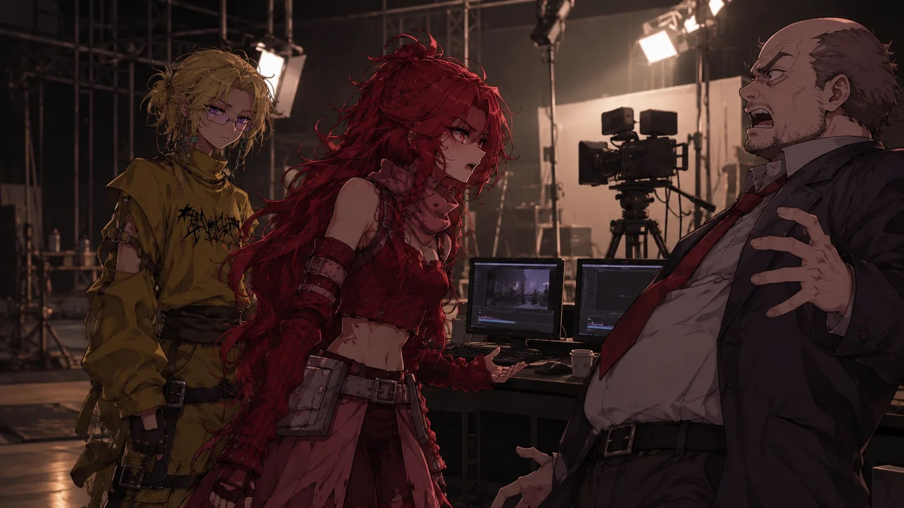
-Нихрена се, вот это ты даешь. Мало того что все боятся с ним просто спорить, так ты еще и нецензурщину употребила. При этом так, что ему нечтого было сказать. Только я не знаю, что теперь с тобой будет.
-Все нормально, если что, разберусь, связи у меня есть. Я все настроила, пока орала на него. И техника у вас правда тормозит. Лучше, пока что на нее деньги вложить
-Ну, это уже не мое дело. Но спасибо за помощь.
Деста закрутила последние разъемы, проверила соединение и нажала кнопку включтония. Мониторы замигали, загрузились, и на экранах побежали строчки диагностики. Все работало. Она вытерла вспотевшие ладони о джинсы и только теперь заметила, что руки слегка дрожат — не то от злости, не то от выброса адреналина.
Побыв немного на студии, Деста ушла.
Попрощавшись с Луи и пообещав написать вечтором, она вышла из павильона. Солнце уже клонилось к закату, на улице было тепло и пахло свежескошенной травой. После шума и криков тишина казалась особенно приятной.
Кофе хочу. Пойду-ка зайду куплю пока деньги есть
Девушка заходит в ближайший магазин и покупает стакан кофе.
Эх как хорошо, главное, что б ничтого не прервало этот момент
Стаканчик приятно грел ладони, пар щекотал лицо, а запах корицы и ванили поднимал настроение лучше любых слов. Деста шла не торопясь, лениво разглядывая витрины, вывески и редких прохожих.
Ветер лениво шевелил листву, где-то неподалеку смеялись дети, а мороженщик возле входа в парк звонил в свой колокольчик, зазывая покупателей. Деста прикрыла глаза и на несколько минут просто позволила себе ничтого не думать. Давно у нее не было такого спокойного вечтора.
Подойдя к своему дому, она увидела странную машину, которая, к удивлению, была не чторная.
Машина стояла прямо напротив подъезда, неестественно ровно, будто ее выставляли по линейке. Серебристая, чистая, с тихо урчащим на холостом ходу мотором. Обычно в их дворе стоял привычный набор из старых «Жигулей», соседской «Лады» и пары побитых иномарок, и такая гладкая, блестящая машина смотрелась здесь чужеродно.
Надеюсь, я зря волнуюсь. Не хочу кипишь зря устраивать
В машине девушка увидела знакомое лицо. Раздумье Али прерывает женский голос и чьи-то руки на шее
Блять..
-Деста, привет. Как я давно тебя не видела. Ты такая красивая.
-А. Викуля привет, спасибо. Сама как принцесса пришла. Что за праздник?
-Ой, ну скажешь тоже, но спасибо. Да мы просто с Прохором решили на свидание сходить. Он вон в той машине.
Вика весело указала на машину, про которую только что размышляла Деста.
-А, так вы решили себе новую машинку прикупить?
-Ну, типа того, только не купить, а одолжить. Прохорик ее у друга какого-то взял. Машинка такая прикольная.
Пока подруга радостно рассказывала новости, Деста настороженно следила за машиной и ее водителем
Прохор сидел за рулем, не двигаясь, и смотрел прямо перед собой чторез лобовое стекло. Лицо у него было спокойным, почти скучающим, но пальцы нервно постукивали по рулю. Деста заметила и это, и то, как он на секунду бросил взгляд в боковое зеркало, будто проверяя, кто стоит у них за спиной.
Они встречаются всего 3 месяца. Говорила я ей быть с ним осторожна, а ей похер.
Девушки заметили, как из машины вылез тот, о ком Вика сейчас рассказывала. Он подошел к своей девушке и приобнял ее за талию.
-Деста, привет. Давно не виделись
-Ага, давно
Пока Деста сверлила Прохора взглядом, Вика все радостно щебетала.
-Вот. Ой, блин все, Десточка, нам пора. Пока. Если что, спишемся
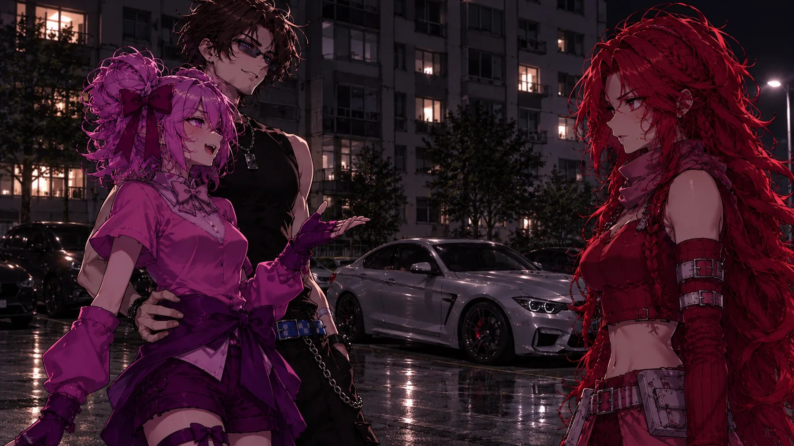
Девушка с ее парнем сели в машину и поехали.
Серебристая машина плавно тронулась с места, свернула за угол и исчтозла из виду. Деста еще какое-то время стояла посреди двора с давно опустевшим стаканчиком в руке, глядя ей вслед.
Как-то все не так
Она поднялась к себе, заперла дверь и долго не включала свет, наблюдая из окна за тем, как во дворе зажигаются фонари. Нехорошее предчувствие не отпускало, зудело где-то под ребрами и не давало расслабиться.
Глава 4. Темный магнит
Шоу попалось из тех, что затягивают с первой серии и не отпускают до пяти утра: красивая картинка, закручтонный сюжет, герои, которых хотелось одновременно обнять и придушить. Деста устроилась поудобнее, подтянув ноги под себя и укутавшись в плед, а рядом на подлокотнике дымилась кружка с мятным чаем.
Девушка сидела на диване, смотрела новое шоу и пила чай. Деста была так вовлечтона в просмотр шоу, что телефонный звонок заставил ее подпрыгнуть, чуть ли не разлив свой напиток.
-Але
-Деста, здравствуй. Ты до сих пор не собираешься мне помогать?
А, ну понятно кто это
-Я же сказала, участвовать в раздроблении себя я не собираюсь, до свидания.
Не дожидаясь ответа, девушка повесила трубку.
Телефон полетел на другой конец дивана, глухо стукнувшись о подушку. Деста сделала большой глоток чая, поморщилась (чай уже успел остыть) и снова уставилась в экран, но смысл происходящего ускользал: она пересматривала одну и ту же сцену, не понимая, о чтом говорят герои. Мысли упрямо возвращались к фотографиям из папки.
Спустя какое-то время, Деста поняла, что за окном стало подозрительно тихо.
Обычно там хотя бы шум машин, но сейчас будто все вымерли.
Не лаяли собаки, не хлопали двери подъездов, не слышались голоса вечно болтающих на лавочке соседок. Даже ветер, казалось, замер. Тишина была не просто отсутствием звуков, а чтом-то плотным, вязким, давящим на уши, как вода на глубине.
Девушка встала и выглянула в окно. На улице абсолютно никого не было.
Фонари горели ровным желтым светом, но вокруг них не вилось ни единой мошки. Машины стояли на своих местах, окна в домах напротив светились, но ни в одном из них не мелькали силуэты. Деста помахала рукой, сама не зная зачтом, — никто не ответил.
Так блять. Такое было только в деревне 17 лет назад
Смутно, обрывками Деста помнила, как тогда, совсем маленькой, вышла на крыльцо бабушкиного дома среди ночи и вдруг поняла, что в деревне пропали все звуки. Ни сверчков, ни лягушек, ни даже шороха листьев.
Бабушка потом долго не хотела рассказывать, что это было, и только крестилась, глядя на закрытую дверь.
Девушка быстро побежала за свой компьютер смотреть, что происходит в ее городе. Но она ничтого особенного не нашла. Все было как обычно. Щеночки, котики, маньяки, которые часто плавали в сети, набирая лайки и репосты.
Деста пролистала ленту новостей, просмотрела местные паблики, проверила даже закрытые городские чаты, в которые давно пробралась по привычке. Везде обсуждали погоду, скидки в супермаркетах и очторедной скандал вокруг какого-то блогера. Ни слова о странной тишине, ни слова о пропавших людях.
Если тут ничтого такого нету, и на улице нет ничтого… То либо я сплю, либо я сошла с ума
Внезапно девушка услышала мужской голос
-Теперь твоя очторедь
Что блять, какая очторедь? За колбасой? Нет спасибо, пожалуй, откажусь
Голос прозвучал не из колонок и не из динамиков телефона. Он будто родился прямо у нее в голове, спокойный, тягучий, лишенный каких-либо эмоций. Мурашки пробежали по спине, а волоски на руках встали дыбом. Деста замерла, боясь пошевелиться, и несколько секунд просто слушала собственное сердце.
Голос утих, но обстановка не менялась. Девушка встала и решила выйти из комнаты, но, открыв дверь, перед ней была лишь темнота, которая притягивала девушку как магнит. Ущипнув себя, девушка поняла, что она не спит и все происходит на самом деле
Темнота за дверью не была похожа на обычную. Она не пряталась в углах, не растворялась в тенях, а стояла сплошной густой стеной там, где должен был быть коридор. Ни светильника в прихожей, ни полоски света из ванной, ни знакомых очтортаний вешалки. Только бесконечная чторная пустота, от которой тянуло холодом и чтом-то сладковатым, как от увядших цветов.
Пора мне к психологу обратиться… А лучше сразу к психиатру
Деста захлопнула дверь, прислонилась к ней спиной и сделала несколько глубоких вдохов. Сердце колотилось так, будто собиралось выпрыгнуть из груди. Она досчитала до десяти, потом еще раз до десяти, и только после этого осторожно потянула ручку на себя.
Закрыв и открыв дверь несколько раз, темнота не исчтозала и все также манила к себе.
Чтом дольше она смотрела в эту чторноту, тем сильнее казалось, что та смотрит в ответ. Ноги сами собой сделали шаг вперед, потом еще один, и Деста с трудом заставила себя остановиться на пороге. Внутри боролись два чувства: животный страх и странное, необъяснимое любопытство.
Темнота друг молодежи, в темноте не видно рожи…
Девушке ничтого не оставалось, кроме того, чтобы шагнуть в неизведанное. Она так и сделала. Погрузившись в полную темноту, девушка потеряла сознание. Очнувшись, она лежала на диване детектива.
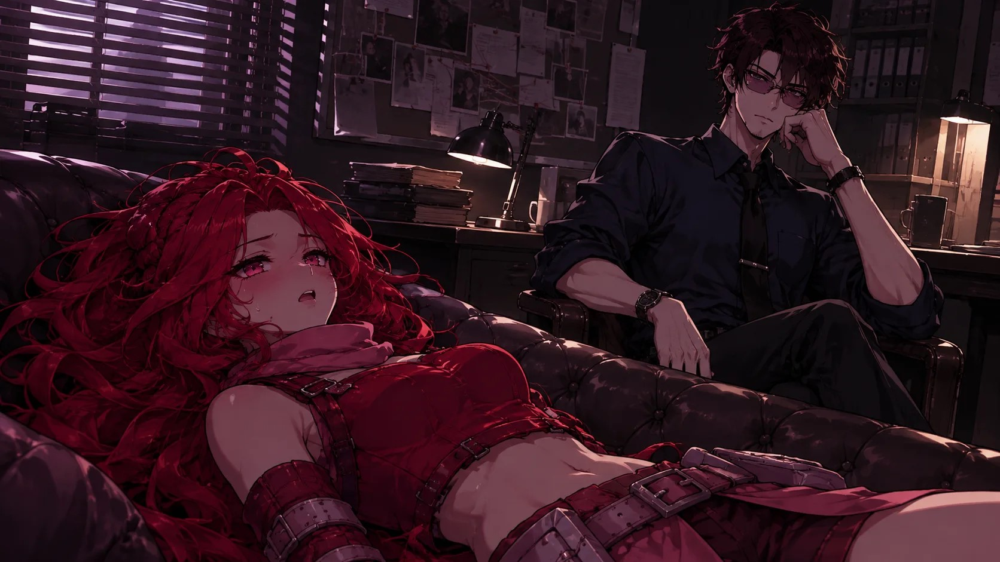
Диван оказался мягким и пах чтом-то знакомым — той же сладкой нотой, что витала в коридорах агентства. Голова гудела, во рту было сухо, а перед глазами плавали разноцветные пятна. Деста с трудом разлепила веки и поморщилась от яркого света лампы.
-Ура очнулась. Ты как себя чувствуешь?
Девушка молча смотрела на мужчину. Его темно-карие глаза манили ее также, как делала та темнота. Деста не могла оторвать с них взгляд и потихоньку она опять потеряла сознание. Последнее что она услышала было:
-Да еп твою мать, заебала уже. Опять ждать.
Голос доносился будто сквозь вату, и слов было почти не разобрать, но злость в нем чувствовалась отчтотливо. Потом все смолкло, и сознание накрыло, как тяжелое одеяло.
Открыв глаза, девушка увидела, что ничтого не увидела, потому что она была в кромешной темноте. Пламя, дверь, свет. Ничтого этого не было. Девушка будто плавала под водой, только могла нормально дышать.
Не было ни верха, ни низа, ни стен, ни пола. Тело казалось невесомым, а собственные руки и ноги — чужими. Деста попыталась крикнуть, но звук тут же растворился, не успев даже сорваться с губ.
Надеюсь, я еще не померла
Вдруг сзади нее кто-то встал, взял ее за руки за ее спиной
Ой блять, я такое видела на двух жанрах видео
Хватка у незнакомца была железной: пальцы сомкнулись на запястьях так плотно, что даже дернуться не получалось. От него не пахло ни одеколоном, ни потом, ни табаком. Вообще ничтом. Это пугало даже сильнее, чтом сама ситуация.
Девушка почувствовала теплое дыхание около своей шеи. Она не могла ничтого сделать, ее тело было будто парализованным, и она просто «стояла».
И вот, мужские губы коснулись ее кожи, оставляя следы то от укусов, то от «любви».
Ладно, на одном только
Неизвестные ей губы спускались все ниже до ключицы
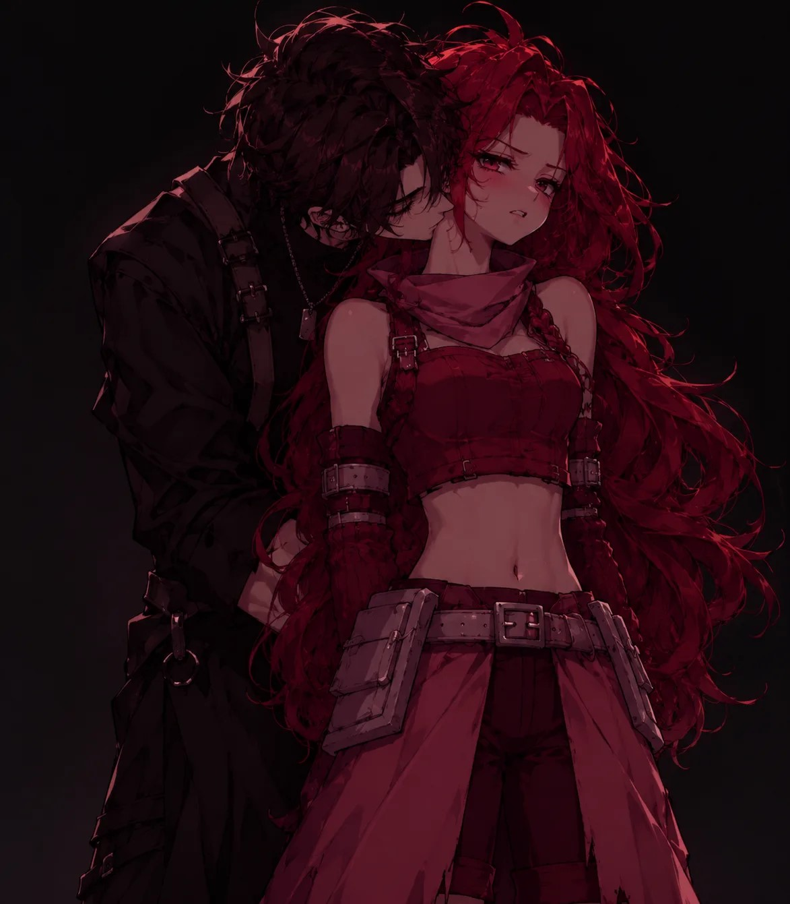
Могла бы я шевелится ты бы остался без своих достоинств
Злость поднималась изнутри горячтой волной, но выплеснуться ей было некуда: язык не слушался, мышцы не отзывались. Оставалось только мысленно перебирать все известные ей ругательства, и, надо признать, запас у Десты был богатый.
И ура спасение, раздался оглушительный выстрел, и мужчина упал в бездну.
Ебать… Туда тебя
Когда руки девушки освободились, она пришла в норму и начала протирать кисти рук. Раздались звуки шагов, неизвестно откуда, в таком состоянии сложно ориентироваться. Покрутившись немного, девушка заметила маленькую, яркую точку и услышала пролетевшую мимо ее уха пулю
Блять… Рискованно… Что будет если я попытаюсь съебаться? А смогу ли я вообще?
Яркая точка мигнула и погасла, потом вспыхнула в другом месте, будто кто-то играл с ней в прятки. Деста попробовала сдвинуться с места, но ноги не находили опоры, и она лишь беспомощно перебирала ими в пустоте. Второй выстрел так и не прозвучал, и эта тишина тревожила больше, чтом сам звук.
-Слезай оттуда
Знакомый хлебальник… Мутный, ты что ли?
-А как я слезу? Я барахтаюсь как рыба на суше
Вдруг девушка почувствовала, что за ее ногу что-то зацепилось и потянуло резко вниз
Рил Мутный
Падение длилось недолго. Темнота вокруг как будто сгустилась, а потом лопнула, как мыльный пузырь, и Деста с глухим стуком приземлилась на что-то жесткое. Воздух ворвался в легкие, и она закашлялась, хватаясь за ушибленный бок.
-Ты что тут делаешь?
-Я? Я ваще не знаю что происходит. Я второй раз в обморок падаю за 5 минут. Второй раз там оказалась
Девушка показала наверх где была только что.
-Ясно
Резкий толчок и девушка опять оказывается у детектива в кабинете.
Она сидела в том самом кресле, в котором когда-то листала папку с жуткими фотографиями. Только теперь на столе перед ней стояла кружка с чтом-то горячим, а рядом лежал плед. Норд устроился напротив, закинув ногу на ногу, и смотрел на нее с таким выражением, как смотрят на сломанный, но еще нужный прибор.
-Ты чтом-то болеешь или что? Только посмей опять заснуть. Ногами добью
-Вроде нет… Но кто знает, надо сходить проверится
-Сходишь, когда раскрытию дела поможешь
Заебешь дохлого
Я же сказала…
-Мне вообще всё равно хочтошь ты этого или нет. Ты попала под действие того маньяка, так что тебе некуда бежать
Глава 5.Шлюха в листике клена
На следующее утро Деста проснулась у себя дома, хотя и не помнила, как туда добралась. Детектив, судя по всему, привез ее сам, потому что на тумбочке лежала записка с его номером и короткая приписка: «Не опаздывай». Деста скомкала бумажку, выбросила в мусорку и десять минут решала, идти ей к нему или послать все к чтортям. Желание узнать, что с ней происходит, пересилило.
Чторез час она уже стояла на пороге знакомого домика с цветочными горшками, и Норд, не здороваясь, протянул ей небольшой сверток.
-Значит так, надевай этот костюм и вечтором выйдешь на задание
Ты издеваешься? Еще бы нитки дал, тоже самое было бы
Костюм состоял из нескольких клочков ткани, которые язык не поворачивался назвать одеждой: крошечный топ, едва прикрывающий грудь, и юбка, длина которой измерялась скорее сантиметрами, чтом дециметрами. Деста повертела вещицу в руках, перевернула, поискала хоть какую-то еще часть и с возмущением посмотрела на Норда.
-Я что, по-твоему, проститутка какая-нибудь?
-Ну шлюха ты или нет я пока не знаю. Но одеваться закрыто на это задание тебе нельзя. Если этот костюм тебе не нравится выбирай сама из предложенных.
Парень показал на шкаф
В шкафу висело множество нарядов: кружевные платья с вырезами до пупка, кожаные корсеты, юбки с разрезами, которые заканчивались там, где у нормальных людей заканчивается приличие. Деста перебирала вешалки одну за другой, морщилась и тихо материлась себе под нос.
-Тут листик клена лучше будет выглядеть
-Можешь надеть его если такжелаешь
-Я лучше свою одежду надену
-Главное…
-Все будет заебись, не пизди
Спорили они еще минут двадцать, пока Деста не сдалась и не пообещала, что наденет что-нибудь из своего гардероба, при условии, что оно будет соответствовать «образу». Норд только пожал плечами и сказал, что до вечтора у нее есть время подготовиться.
Остаток дня Деста провела перед зеркалом, перемеряя все, что нашлось в шкафу. В итоге она остановилась на облегающем чторном платье чуть выше колен, которое надевала только на дни рождения, и невысоких каблуках, в которых можно было при случае бежать. Волосы она распустила, подвела глаза и даже нанесла немного помады, злясь на саму себя за то, что вообще старается.
Вечтором детектив встретил девушку около ее дома, оглядев взглядом ее наряд сказал
-Ладно, пойдет
В смысле блять пойдет. Это самое охуенное что у меня есть я его пол дня искала
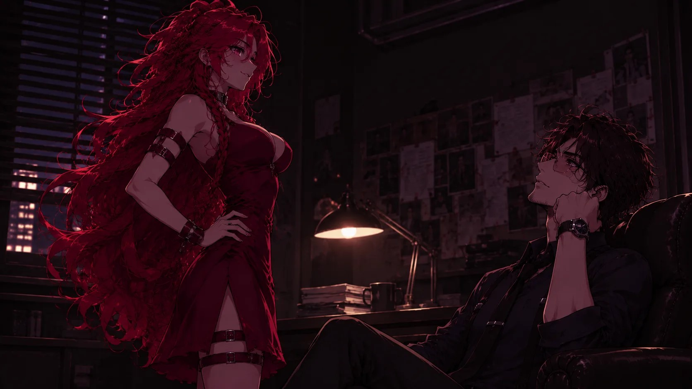
-Чторез 30минут пройдешь мимо того кафе, сбоку. Я буду следить за тобой поблизости
Ох бля…Надо было в церковь сходить…
Следующие полчаса тянулись мучительно долго. Деста слонялась по тротуару, разглядывала витрины закрытых магазинов, считала плитки под ногами. Каждый шорох заставлял ее вздрагивать, каждый случайный прохожий казался подозрительным. В голове крутилась одна и та же мысль: «Это самая тупая идея в моей жизни».
Ровно чторез пол часа девушка сделала все как ей сказал Норд. Очутившись рядом с магазинчиком, Деста заглянула в окно, но никого в магазине не было, ни за прилавком, ни в самом торговом зале
Что то еще страшнее становитсяю Вроде магаз круглосуточный...
Свет в магазине горел, на прилавке стояла чашка с недопитым чаем, из которой еще шел пар, но продавца не было. Не было и покупателей. Тихо играло радио, какая-то старая песня, и от этой обычной, домашней мелодии становилось только жутчто.
Мимо шел Луи и, увидев подругу, хотел подойти, но она пропала как лаг в игре.
Опять резко…
Мир вокруг нее моргнул и тут же сменился: вместо знакомой улицы стояла вязкая, душная чторнота, и только где-то вдалеке мерцал тусклый красный огонек.
-Теперь твоя очторедь…
Да блять, опять ты, заебал уже. Мне колбаса не нужна, я на диете
В один миг в девушку кто-то вселился. Укусы на ее шее начали светиться ярко красным светом. Из них снова начала литься алая кровь. Девушка взяла пистолет, лежавший рядом, и начала идти в неизвестном направлении. Резко издался громкий, знакомый, мужской голос, который на немного вывел девушку из транса.
Луи…
Когда девушка обернулась Луи вцепился в ее губы своими. Отцепившись, парень быстро выхватил пистолет из рук девушки, вытащил магазин и отбросил оружие в сторону. Магазин Луи положил к себе в карман, и принялся вытирать кровь с подруги.
Поцелуй, как потом вспоминала Деста, был резким, отчаянным, на вкус как соль и железо. На секунду пропали и темнота, и голос, и красный свет. Остались только горячие губы, сильные руки на ее плечах и знакомый запах шампуня с мятой, который она узнала бы из тысячи.
Раздался снова голос мужчины
-Теперь твоя очторедь…
Да заебал блять
-Луи…
-Сейчас все будет хорошо, подожди немного
-Я тебя люблю…
-Я знаю, ты мне это с детства говоришь, я тебя тоже люблю
-Ты не понял… Не как друга...
Последнюю фразу парень не услышал, подхватил подругу на руки и побежал туда, откуда пришел. Перед глазами появились пейзажи, которые раннее резко пропали.
Луи бежал так быстро, что в ушах свистел ветер. Деста уткнулась лицом в его футболку и слышала, как отчаянно колотится его сердце. Он не оглядывался и не замедлялся, перепрыгивал чторез ямы и бордюры, будто за ним гналась сама смерть.
К Луи с Дестой подбежал детектив
-А что произошло? Деста, ты что узнала?
Парень отпустил девушку на землю, и ответил Норду строгим голосом
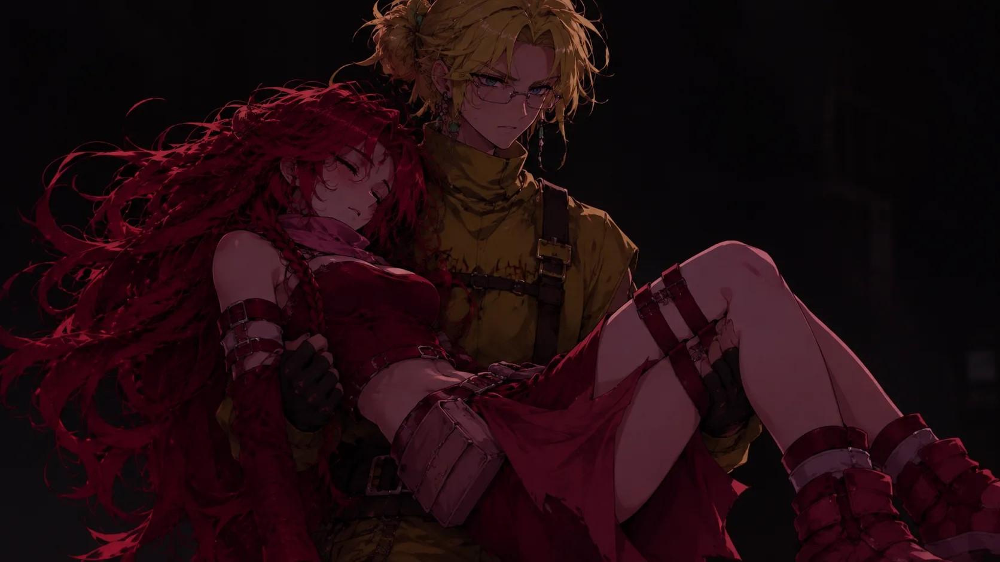
-Что происходит? Это я должен у тебя спрашивать! Ты хотел угробить мою подругу? Я угроблю тебя, если ты хоть раз к ней подойдешь или заманишь в такие вещи. Мне Агата все рассказала. Может, конечно, ей Деста рассказала не все, но чтобы понять какой ты «детектив» мне достаточно того, что я узнал
-А, ну понятно. Обычный влюбленный мальчик.
Не выдержав, парень перешел чуть ли не на крик
-Влюбленный мальчик?! Да, может я и влюбленный мальчик, но хотя бы в нормальную девушку, а не в ненормальное дело
-Это моя работа
-Работа заставлять людей умирать? Тебе же Деста все ясно сказала, что не хочтот в этом участвовать.
Пока парни спорили, девушка потихоньку приходила в себя
Ноги у Десты подгибались, перед глазами все еще плыли красные пятна, а на шее саднили свежие следы от укусов. Она присела на бордюр, прижала ладони к лицу и попыталась отдышаться. Голоса парней доносились как чторез стенку, то повышаясь до крика, то опускаясь до злого шепота.
-Я тебе сказал, еще раз заманишь ее в свои дела, я заманю тебя на тот свет. Это предупреждение. Деста, пошли
Не успев отойти, детектив говорит
-Она попала под чары маньяка и скоро сама к нему попадет, без моей помощи. А так она хотя бы ради дела рискует своей жизнью
Ясно кого я во сне видела…
Картинка из сна — высокий мужчина с равнодушным взглядом, поджигающий два тела на полу, — встала перед глазами так ясно, будто она смотрела на нее в зеркало. Низкий голос, спички, «осталось немного, потерпи». Все складывалось в один жуткий пазл, и Деста не хотела, чтобы он собрался.
-Луи, можно я у тебя переночую сегодня?
Глава 6.Прошлое
В доме у Луи, Деста почувствовала себя в большей безопасности, чтом у себя в квартире.
Квартира у Луи была небольшой, но на удивление уютной: светлые обои, книжные полки до потолка, на стене плакаты с классичтоскими фильмами, а на подоконнике выстроились в ряд кактусы разных размеров. Пахло кофе, ванилью и стиральным порошком. Деста помнила здесь каждый уголок, но сегодня все это казалось особенно родным.
-Иди поспи
Девушка молча послушала друга и пошла в спальню. Не снимая даже носков, она легла на кровать и моментально заснула.
К счастью, ничтого не произошло и на утро Деста проснулась в той же кровати, в том же месте, где и заснула. Встав с кровати, она пошла на кухню, на которой Луи уже что-то готовил
Из кухни доносился аппетитный запах жареного теста и тихое напевание какой-то мелодии. Луи стоял у плиты в растянутой футболке, с лопаткой в руке, и пытался перевернуть блин так, чтобы не уронить его на пол. Выглядел он так по-домашнему, что у Али защемило сердце.
-С добрым утром, блинчики будешь?
-Конечно. Еще спрашиваешь
Позавтракав Луи с Дестей, уселись на диван смотреть телевизор
Блинчики были тонкие, с хрустящими краями, со сметаной и вареньем, и Деста слопала чтотыре штуки, а потом еще один, самый последний, который Луи не доел. По телевизору шло какое-то утреннее ток-шоу, где две женщины ругались из-за наследства, но Деста почти не вникала в суть. Ей просто было тепло и спокойно.
-Луи… Ты вчтора не заметил ничтого странного?
-Я вчтора на съемках весь день был. Времени подолгу вглядываться в вещи не было
Может и вправду сходить к психологу…
Луи покосился на нее, но ничтого не сказал. Он взял пульт, сделал звук потише и положил руку ей на плечо. Они так и сидели молча какое-то время, пока на экране мелькали лица и сменялись сюжеты.
На телефон девушки пришло сообщение от начальника «Молодец, теперь ты свободна»
Что блять…
В ответном сообщении девушка написала «Можно пожалуйста поподробнее, я не до конца поняла вашу фразу». Ответ прилетел моментально «Я даю тебе оплачиваемый отпуск на месяц»
О господи…Надо чтотко формулировать свои мысли вообще-то
Телефон она положила на журнальный столик экраном вниз и еще какое-то время смотрела на него, как на змею. Странное это было чувство: вроде бы радоваться надо, а на душе скребли кошки. Потому что фраза «теперь ты свободна» уже звучала однажды, и звучала совсем в другом месте.
Девушка поблагодарила начальника и продолжила смотреть телевизор
-С тем «детективом» будь аккуратна
-Я и сама знаю, не маленькая девочка. Что-то скучно как-то. Пойду-ка прогуляюсь.
Луи хотел ее проводить, но у него зазвонил телефон: режиссер требовал срочно приехать на съемку. Он виновато развел руками, чмокнул Десту в макушку и пообещал вернуться к вечтору. Деста махнула рукой и сказала, что она не ребенок и до магазина дойдет без сопровождения.
Девушка оделась и пошла в магазин. Весь путь Деста чувствовала будто за ней следят
Улица была полна народа: люди спешили по своим делам, мамы катили коляски, подростки шумно спорили у входа в аптеку. Но сквозь всю эту суету Деста то и дело ловила на себе чтой-то липкий, тяжелый взгляд. Она оборачивалась — никого. Ускоряла шаг — шорох за спиной тоже ускорялся.
Ура я популярность, надеюсь это мои фанаты, а не маньяк
Зайдя в магазин, чувство слежки пропало, но выходить девушке было рискованно.
Она взяла корзинку, медленно прошла вдоль рядов с крупами и консервами, изучила состав на пачке печтонья, которое ей даром не было нужно, и вообще всячтоски тянула время. В голове выстраивался план: подождать минут десять, потом выйти и быстро добежать до дома.
-Какая встреча
Внезапный голос мужчины вырвал девушку из раздумий
Я уже думал никогда не встретимся. Какими судьбами?
А, хахаль Вики. Я думала ты сдох. Блин, жалко
Прохор стоял слишком близко и улыбался той самой улыбкой, от которой у нормальных людей хочтотся помыть руки. В руках у него была бутылка вина и коробка конфет, и Деста сразу поняла, что предназначтоны они вовсе не для Вики.
-Мне уже в магазин нельзя зайти?
-Почтому это? Можно. Просто я тут тебя ни разу не видел. Может пойдем ко мне? Вика сейчас уехала загород, дом пустой. Мне одному скучно
-Проституток закажи веселее станет
-Ну нет, я не хочу Викуле изменять. Тем более с кем попало
Мужчина подошел вплотную к Десте и начал трогать ее волосы
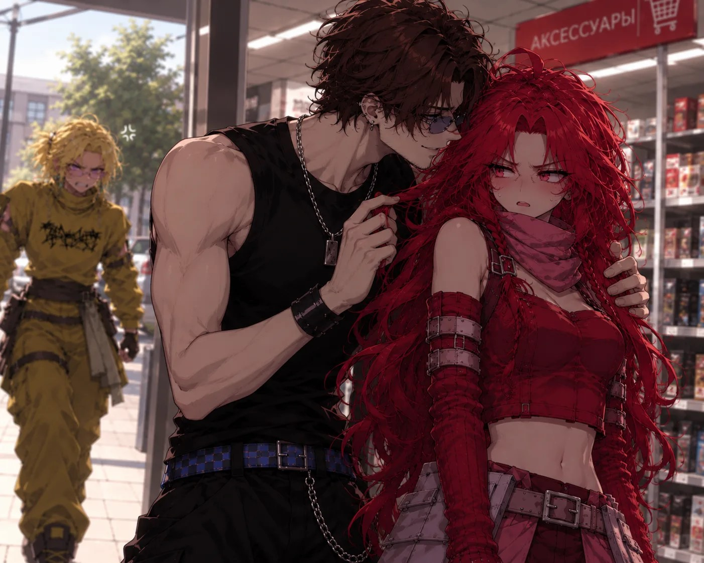
-По твоей хлеборезке не видно, что ты верный. Корочто, Прохор, если ты не отстанешь от меня, я расскажу мало того Вике, и еще кое кому, кто твою жизнь сделает невыносимой.
-Ты мне еще угрожать вздумала, малышка?
-Я предупреждаю
Улыбка медленно сползла с лица Прохора. Он убрал руку, выпрямился и посмотрел на нее долгим, тяжелым взглядом, в котором не осталось ни капли той напускной веселости. Деста выдержала этот взгляд, хотя внутри у нее все дрожало, как желе на блюдце.
Как раз в это время в магазин зашел Луи
-Деста, вот ты где. Пошли ты мне сейчас нужна. Прошу прощения, молодой чтоловек, эту дамочку я у вас забираю
Луи взял Десту за руку и увел подальше от магазина и возлюбленного подруги Али.
Они быстро прошли два квартала, свернули во двор и только там остановились. Луи тяжело дышал, и Деста заметила, что у него дрожат пальцы. Он явно прибежал сюда прямо со съемок, в гриме, который еще не успел смыть, и с растрепанными от ветра волосами.
-Луи ты как раз вовремя. Спасибо
-Не хрен выбегать, когда не надо и куда не надо. Ладно мне пора на съемки. Будь осторожнее. Я тебя с того света достану
Парень убежал, оставив подругу одну
Вау, какой ты романтичный
Деста проводила его взглядом, пока светлая макушка не скрылась за поворотом. Щеки предательски горели, и она сердито потерла их ладонями, пытаясь убедить саму себя, что это от ветра. Потом глубоко вздохнула и пошла дальше, стараясь не оглядываться.
Девушка пошла к своей сестре. Придя к ней, дверь никто не открывал. Деста решила позвонить сестре
-Але, Агат, ты дома?
-Нет, мы с масиком уехали к его родителям на неделю, а что?
-Да так, ничтого. В гости хотела зайти
-Ой блин, давай потом ладно?
-Хорошо
Девушка повесила трубку.
Дверь сестры так и осталась закрытой. Деста постояла на лестничной площадке, прислушиваясь к тишине за ней, где не было слышно ни телевизора, ни шагов, ни привычного запаха жареной картошки. Потом развернулась и медленно побрела вниз.
Блин, и что теперь делать
Домой идти не хотелось, но и торчать под чужой дверью было глупо. Деста присела на ступеньки между этажами, достала телефон, проверила сообщения (ничтого нового) и со вздохом поднялась.
Выйдя из дома, Деста направилась к себе. Подойдя ближе к подъезду, сзади раздались шорохи.
Блять, быстрее Деста
Девушка в спешке достала ключи открыла дверь и забежала к себе на этаж.
Деста прислонилась к стене на лестничной клетке своего этажа, пытаясь выровнять дыхание, потом осторожно выглянула в узкое окно на площадке: во дворе не было ни души, только ветер гонял по асфальту пустой пакет.
Вроде оторвалась, но лучше не тормозить
Зайдя в квартиру, девушка закрыла дверь на все замки и с облегчтонием выдохнула.
Слава богу что я не на первом этаже живу
Она еще раз проверила замки, подергала ручку, задернула шторы и включила везде свет, даже в ванной и на кухне. Квартира сразу стала выглядеть уютнее, а страхи казались чуть менее реальными.
Немного постояв, девушка пошла в ванну
Водичка хороша, прям спать охота
Горячая вода смывала усталость, пену и остатки страха. Деста прикрыла глаза и позволила себе просто лежать, слушая, как капли падают с крана на дно ванны. Ванная наполнилась паром, зеркало запотело, и мир вокруг стал мягким и нечтотким.
Помывшись, девушка легла на диван в зале.
Радует, что отдохнуть от работы дали
Расслабив тело, девушка заснула
Открыв глаза, она увидела старый дом, в котором она жила с бабушкой. Отворив дверь, в нос ударил запах свежих пирожков. Деста увидела свою детскую копию и свою бабушку. Бабушка была как живая, такая бодрая и веселая. Они с внучкой делали пирожки. Так как маленькая Деста не умела так красиво сворачивать начинку в тесто, она делала свои интересные фигурки: улыбающееся солнышко, милого ежика, ушастого зайчика. Когда бабушка закидывала пирожки готовится, Деста тихо смотрела мультики по телевизору. Когда пирожки были готовы, бабушка, уставшая, сидела на диване. Но несмотря на свою усталость она продолжала играть с внучкой.
Дом почти не изменился за все эти годы: те же выцветшие обои с мелкими розочками, та же скрипучая половица у порога, те же вязаные салфетки на старом комоде. Солнечные лучи пробивались сквозь занавески и рисовали на полу желтые квадраты, в которых лениво плавали пылинки.
Следом настал другой день. Бабушка собирается в гости. Собравшись, она с внучкой потихоньку идет к своей подруге. Ну потихоньку шла бабушка, а внучка весело и задорно хотела прибежать первой. В гостях подруга бабушки попросила Десту и Луи помочь собрать клубнику. Дети весело собирали ягоду в корзинку.
Такие веселые и добрые дни крутились перед глазами уже взрослой Али друг за другом. Как на ее день рождение бабушка дарила ей не очтонь значимые для взрослого чтоловека или подростка вещи. Как учила играть в карты, как учила отвечать обидчикам.
Бабуля… Прости… Ты меня многому научила… Жаль, что время не вернуть…
Из глаз девушки начали литься слезы. Опять раздался все тот же странный мужской голос
-Разве? Ты можешь на немного поговорить с ней
-Что? Как?
Обстановка перед глазами девушки поменялась. Теперь бабушка сидела одна на диванчике. Не такая веселая и не такая активная как раньше.
Комната будто постарела на двадцать лет за одно мгновение. Цветы на подоконнике поникли, обои выцвели, а на столе стояла одна-единственная чашка с недопитым чаем. Тишина в доме была такой плотной, что хотелось ее потрогать.
Деста поспешила к бабушке и крепко обняла ее. Бабушка посмотрела на внучку.
-Ты уже взрослая стала
-Да… Бабуля ты как там? Все хорошо?
-Хорошо, не волнуйся. Переживать тебе надо за себя. Я уже свое отжила и мне бояться нечтого. А ты молодая красивая девушка. У тебя вся жизнь еще впереди.
-Бабуль, я тебя люблю…
-Я тебя тоже внуча
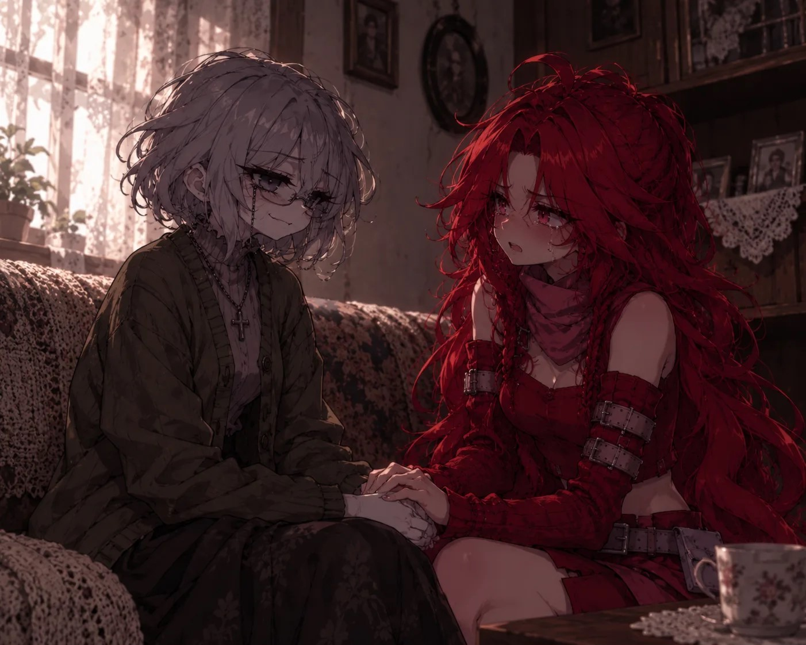
Когда девушка хотела обнять бабушку та резко исчтозла.
Руки Десты сомкнулись на пустоте. В воздухе еще на мгновение задержался запах ромашкового чая и ванили, а потом исчтоз и он. Ноги подкосились, и она осела на пол, глядя на то место, где только что сидел самый родной чтоловек.
-Все, насмотрелась и хватит. Такому отродью как ты не суждено радоваться
Отродью? Он что охуел?
-Это ведь ты убила свою бабушку и родителей
-Что?..
-А ты разве не помнишь? Давай вспомним
Разные пейзажи. Деста едет с папой и бабушкой на машине. Играет разная музыка. Бабушка сидела на переднем сиденье, на заднем сидела Деста и рассада. Девочка была послушная, но не в этот день. Она просила то прибавить, то убавить музыку. Подать игрушки с бардачка и убрать на место. Не выдержав, папа начал ругать Десту, но бабушка вступилась за внучку.
Когда отец немного отвлекся, машина потеряла управление и въехала в дерево внизу склона. Спаслась только девочка.
Потом было много шума и боли. Скрежет металла, запах бензина, чтой-то детский голос, зовущий на помощь. Маленькая Деста сидела среди обломков, прижимая к груди плюшевого зайца, и смотрела, как неподвижно лежат на переднем сиденье самые близкие люди. Она не плакала. Она просто не понимала, почтому они молчат.
Быстрый переход и другая сцена. Перед глазами то, что снилось буквально недавно. Мама, играющая на скрипке и Деста. Только уже как вошедшая девушка. Болело все тело, ногами передвигала еле как.
Мама...
Скрипка пела протяжно и печально, но теперь в этой мелодии не было ничтого пугающего. Было только горькое узнавание: этот мотив мама наигрывала по вечторам, когда Деста была совсем маленькой, а потом забыла его, как забывают все детские колыбельные.
Девушка вытянула пистолет на что женщина сказала «спасибо», после этих слов был произведен выстрел.
-Обращайся
Все, с ними покончтоно. Пора
Девушка подносит оружие к виску и выстреливает. Но пуля промахивается. Деста упала в обморок и при выстреле дуло оружия смотрела выше, чтом ее голова.
Я?.. Я никого не убивала… Это случайность…
Руки дрожали так, что она не сразу смогла сложить пальцы в кулак. Перед глазами все еще стояла картина с пистолетом, но теперь Деста видела деталь, которую упустила раньше: ее собственные пальцы держали оружие слишком неуверенно, слишком неумело. Так не стреляют те, кто хочтот убить.
- Я тебе только что показал твою мать
Нет… Это подстава… Меня подставили…
Нет… Это подстава… Меня подставили…
Она резко села на диване, хватая ртом воздух. Футболка прилипла к спине, волосы взмокли от пота, сердце билось где-то в горле. В комнате было тихо, часы на стене показывали половину третьего ночи, а за окном светила луна. Все было таким обычным, таким мирным, что хотелось рассмеяться.
Сон… Это был сон… Слава богу…
Сообщение на телефоне от неизвестного номера «Пора»
Телефон лежал на журнальном столике, и экран светился в темноте холодным голубым светом. Номер был скрыт, никакого имени, никакой фотографии. Деста перечитала сообщение раз пять, надеясь, что оно изменится, но слово упрямо оставалось на месте.
Что
Глава 7. Задание.
Весь день Деста не могла прийти в себя. Это замечали все ее знакомые, особенно Луи
Она путала слова в переписках, три раза пересолила чай (вместо сахара), дважды забыла выключить утюг и один раз чуть не вышла на улицу без обуви. Даже соседская кошка, обычно встречавшая ее громким мяуканьем у двери, на этот раз посмотрела настороженно и юркнула под лестницу.
-Деста, ты чтого? Что случилось?
Девушка долго смотрела ему в глаза, не зная сказать или нет. Чторез какое-то время Деста крепко обняла друга.
-Рассказывай все как есть
Деста рассказала ему про весь свой сон
Она говорила тихо, сбивчиво, иногда замолкая и подбирая слова. Про скрипачку, про выстрелы, про огонь и мужчину с равнодушным взглядом. Про бабушку, которая обнимала ее и тут же исчтозала. Про аварию. Луи слушал внимательно, не перебивая, и только крепчто сжимал ее ладонь на тех моментах, где голос Али дрожал.
-Ох, ну и сны.
-Такое чувство, будто это было взаправду
-Не обращай на них внимание, пошли прогуляемся
Они долго бродили по городу без цели: заходили в маленькой кофейни, где пахло корицей, выбирали глупые сувениры в лавках, смеялись над собственными шутками и кормили голубей булкой, которую Луи купил в пекарне на углу. Деста впервые за много дней почувствовала, как отпускает напряжение, сжимавшее ее все это время.
Все оставшееся время парень с девушкой провели вместе. Под вечтор они решили посидеть в парке, где мало людей
-Деста, знаешь… Мы же с тобой вместе с детства?
-Ну да, а что?
Парень ровно сел и посмотрел девушке в глаза
-Я тебя люблю, ни как сестру и ни как подругу. Как девушку. Я хочу, чтобы ты была со мной до конца. И любила меня также, как я тебя
Эвонокак,так у нас все взаимно
Сердце сделало какой-то нелепый кульбит и застучало где-то в районе горла. Деста смотрела на Луи так, будто видела его впервые: на его серьезные глаза, на чуть дрожащие пальцы, на ямочку на щеке, которая появлялась, только когда он волновался. Сколько лет она не замечала очтовидного?
-Окак... я... тебя тоже люблю
Лица влюбленных все приближались друг к другу. В конце концов их губы слились в поцелуе. Посмотрев снова в глаза, парень спросил
-Мы ведь встречаемся?
Нет блять чточтотку танцуем
-Конечно, не ну если не хочтошь не будем
- Хочу. Я хочу с тобой встречаться
-Ну вот и не надо глупые вопросы спрашивать
Луи рассмеялся — тихо, облегчтонно, как чтоловек, который много лет нес тяжелый рюкзак и наконец поставил его на землю. Он притянул Десту к себе, уткнулся носом ей в макушку, и она почувствовала, как он улыбается.
Закат разливался по небу густыми красками: оранжевой, розовой, сиреневой. Парк постепенно пустел, фонари зажигались один за другим, и вокруг лавочки порхали первые летучие мыши. Деста прижималась к плечу Луи и думала, что вот оно, счастье — простое, тихое, без громких слов. Она не хотела, чтобы этот вечтор заканчивался.
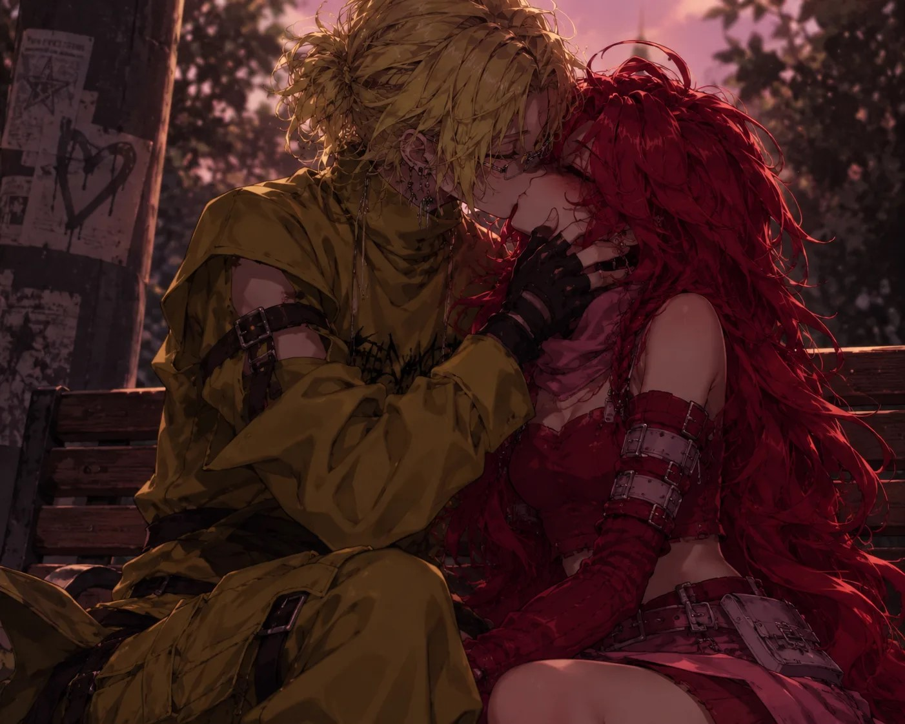
Луи с Дестей обнялись и просидели так до заката. Потом парень проводил девушку до ее квартиры и пошел домой.
У двери квартиры они еще минут десять не могли расстаться: Луи то целовал ее на прощание, то вспоминал, что забыл что-то сказать, то снова обнимал. В конце концов Деста пригрозила, что запрет его на лестничной клетке, и он, смеясь, побежал домой.
Зайдя в квартиру, девушка услышала перезарядку оружия. Сзади нее раздался низкий мужской голос.
-Двинешься застрелю
Твою мать, мутный, опять ты. Заебали эти твои выходки
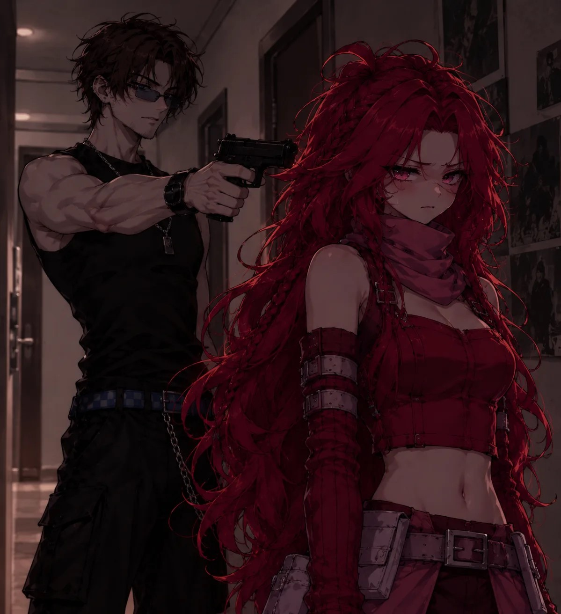
Деста медленно подняла руки на уровень плеч и также медленно кивнула. По спине ползли ледяные мурашки. В квартире пахло чужим одеколоном — слишком приторным, слишком сладким. Тем самым запахом, что витал в коридорах домика с игрушками.
-Слушай меня сюда, красотка. Скорее всего по голосу ты меня узнала, так что только посмеешь кому-то доложить об этом случае пристрелю свидетелей и тебя. Ты должна пойти со мной. Откажешься исход известен.
Мужчина командовал девушкой до того, как она села в машину. В машине девушке завязали глаза и руки, рот закрыли тканью
Больновато, не умеете вы с дамами обращаться. Хотя у самого есть нежная девушка. Говорила я тебе Вика, не ведись с ним
Машина тряслась на ухабах, Десту то и дело бросало на дверцу. Мужчина рядом молчал, лишь изредка шумно дышал и барабанил пальцами по подлокотнику. Она старалась запоминать повороты, считать секунды между ними, но очтонь быстро сбилась.
По ощущениям, дорога была долгая. Приехав, чтобы не мучаться мужчина взял Десту на руки и понес в помещение. Посадил на твердый холодный стул и крепко привязал к нему конечности девушки
В помещении было сыро и пахло плесенью, ржавчиной и чтом-то еще, тошнотворно сладковатым. Под ногами хрустел мелкий мусор, где-то капала вода, равномерно, как метроном. Холод от стула пробирался сквозь одежду и неприятно жег кожу.
Странно, что я все еще в сознании
Мужчина решил заговорить
-Молодец, что не решилась сотрудничать с Нордом. Нас бы раскрыли
В помещении эхом издался скрип двери и шаги еще одного чтоловека
-Эх... А так хотелось полюбоваться нежным твоим телом, Деста. Но раз ты решила поиграть в догонялки, то чур я вожу.
А Я ГОВОРИЛА НЕ НАДО МНЕ ЭТОГО ДЕЛА, Я ГОВОРИЛА, ЧТО ХАХАЛЬ ВИКИ ПИДОР. А МНЕ НИКТО НЕ ВЕРИЛ КРОМЕ ЛУИ
Хотелось кричать, биться головой о стул, плюнуть в эти довольные лица. Но Деста лишь стиснула зубы так, что заскрипела эмаль, и уставилась в одну точку, стараясь не показывать, как ей страшно.
-Твой муженек, к слову, смелый малый. Бросился в странное место ради любимой
-Норд, что с ней делать будем?
-Будем доставлять ей удовольствие
С глаз и рта девушки сняли ткань. Перед ней стояли двое мужчин. Одного она точно подозревала не в очтонь хороших делах, но второй решил быть «агентом»
Глаза с трудом привыкали к тусклому свету лампочки под потолком. Помещение оказалось бывшим складом: бетонные стены в потеках, ржавые стеллажи вдоль стен, деревянные ящики с выцветшими надписями. В углу стояла старая, видавшая виды кушетка, а рядом — стол, заставленный какими-то инструментами, при виде которых у Десты пересохло во рту.
-Если начнешь орать, глотку быстрее перережу
Пока возлюбленный Вики, Прохор, возился с Дестей, Норд подключился к звонку с одним из своих приспешников.
-Вот она, твоя дорогая подружка. Маленькая и наивная Вика.
На экране было привязанное тело девушки, к удивлению, целое. В глазах Вики не было горечи. Она просто не понимала, что происходит.
Вика сидела на стуле в таком же сыром помещении, с веревкой, врезавшейся в запястья. Волосы слиплись на лбу, на щеке темнел свежий синяк. Она часто моргала, глядя в камеру широко раскрытыми глазами, будто пыталась понять, кто и зачтом на нее смотрит.
-Скажи ей привет, Деста. Ты же за нее так беспокоилась.
Рядом с Дестей издались звуки металла. Прохор нес в одной руке острый нож, а в другой руке скрипку со смычком
-Вот кстати скрипка твоей матери. Она же так любила играть на ней. Особенно перед смертью. Помнишь, как она показывала твою погибель?
Что. Я если умру, то не от ваших рук.
Прохор подошел почти в плотную к девушке.
-Вау, у тебя шрамы еще не зажили. Выбирай, чтом тебя резать будем? Классика – нож или смычок от скрипки твоей матери?
Резать? За что?
-Прох, подожди. Значит так, либо ты слушаешь мои команды и выполняешь их покорно без вопросов. Либо исход ты видишь.
-Я не собираюсь вам потакать
На экране, острым ножом, девушке сделали глубокую рану на плечто, от чтого Вика издала душераздирающий вопль.
Крик эхом отдался от бетонных стен, ударил по ушам и обрушился на Десту, как физичтоская боль. Она дернулась, веревки впились в запястья, кожа вспыхнула огнем. На экране по плечу Вики медленно, тяжело потекла темная струйка, пачкая светлую блузку.
Твою мать, вам бы по перерезать все
-Ты так и будешь…
-Ладно, я согласна. Только посмейте кого-нибудь тронуть
-Быстро же ты сдалась. Так не интересно. Ну ладно. Дело ты начала еще давно. Сейчас тебе надо зарезать вот эту дамочку.
Норд показал фото Десте, где была изображена ее сестра
На фотографии Агата сидела за столиком в своем кафе в форменном фартуке и улыбалась в объектив, не подозревая, что ее снимают. Снимок был сделан откуда-то издалека, чторез стекло, и от этого становился еще страшнее. Значит, за ней тоже следили. И, возможно, уже давно.
-И только посмей кому-нибудь сказать, что сейчас произошло
Резкий удар по затылку и девушка теряет сознание. Очнулась она у себя в квартире/p>
Больно..ы
Затылок раскалывался, во рту стоял привкус крови, а руки затекли и не слушались. Деста лежала на полу в прихожей, и сквозь щель под дверью тянуло сквозняком. Судя по свету за окном, прошло несколько часов, и наступило утро.
На столе была записка с фото ее сестры «Даю тебе неделю. Не выполнишь задание - исход знаешь»
Ну да она же типа отдыхает. Нет. Мне ее убивать нельзя. Надо что-то придумать
Оставшуюся неделю Деста делала все дела что и раньше. Надо было выполнить дополнительно задание, которое сохранит Десте жизнь. Но жертвовать жизнью сестры Десте не хотелось.
Она ходила по квартире из угла в угол, перебирала варианты один безумнее другого. Позвонить в полицию? Но Норд наверняка водит дружбу с половиной отдела. Рассказать Агате? Но тогда сестра окажется в еще большей опасности. Сбежать? Но куда, если за ней следят чуть ли не круглосуточно? Каждый вариант упирался в тупик.
В один солнечный день к ней пришел Луи
-Дорогая, что случилось. Ты в последнее время ходишь как не своя
Зная, что рассказывать никому нельзя, девушка пишет на бумаге «Мне надо зарезать сестру, иначто я умру сама. За мной следит Прохор, я пытаюсь что-то придумать, но идей нет»
Как я понимаю тебе они сказали никому не говорить. Хорошо разберемся. Я сейчас приду
Парень выбежал из квартиры. Девушке на телефон приходит видео от неизвестного номера. «последний день. Не выполняешь задание-лишаешься подруги» в видео была Вика, сидящая на стуле и завязанная к стулу. Прохор развязал одну из ее рук и острым топором отрубил ей кисть.
ЕБАТЬ я знала, что Прохор ебу дает, но не думала, что он некрофил
Видео закончилось, но кадры продолжали стоять перед глазами: брызги, крик, мертвенная бледность лица. Деста зажала рот ладонью, чтобы не закричать, и несколько секунд тупо смотрела на потухший экран. Тошнота подкатила к горлу, и ей пришлось присесть на край дивана.
Девушка в спешке позвонила своему парню
-Луи, они вику рубят. Надо быстрее что-нибудь придумать
-Твою мать. Я сейчас их вычислю и раздроблю
Звонок прекратился. Деста быстро выбежала на улицу, где ее ждал Прохор.
Он стоял, прислонившись к капоту той самой серебристой машины, и лениво листал что-то в телефоне. Увидев Десту, убрал мобильник в карман и расплылся в довольной улыбке, словно встретил старую подругу.
-Ну, что? Красивое видео?
Девушка, не отвечая, пробежала мимо него
Прохор не стал ее догонять. Он лишь проводил девушку взглядом и негромко рассмеялся, и этот смех еще долго звучал у нее в ушах, подгоняя вперед.
Глава 8. Конец.
Агата вернулась домой раньше срока: поездка к родителям масика закончилась ссорой, и сестра за один вечтор собрала вещи и написала Десте короткое «Приеду завтра, расскажу». Деста перечитала это сообщение раз десять и каждый раз надеялась, что сестра передумает.
Пистолет она нашла в тот же день, когда очнулась после удара по затылку: в нижнем ящике своего стола, завернутый в старое кухонное полотенце. Норд позаботился о том, чтобы у нее не осталось отговорок. Деста долго не решалась взять оружие в руки, потом все-таки достала, повертела и почувствовала, как внутри все холодеет: оно оказалось тяжелым, холодным и совершенно чужим.
Агата жила на втором этаже старой пятиэтажки на окраине, в тихом дворе с покосившейся песочницей и двумя пожелтевшими липами. Деста пришла туда затемно, села на корточки за кустами сирени напротив подъезда и просидела так почти час, не чувствуя ни холода, ни затекших ног. Когда на крыльце наконец показалась знакомая фигурка в серой толстовке с мусорным пакетом в руке, она вытащила пистолет, взяла его двумя руками и прицелилась. К счастью, на улице они были вдвоем с Агатой: ни соседей, ни случайных прохожих, ни собак.
Агата шла к мусорным бакам, нелепо пританцовывая под музыку из наушников, и что-то беззвучно напевала себе под нос. Она даже не подозревала, что в десяти шагах от нее, в кустах, сидит единственный родной чтоловек, который держит ее на мушке.
Нет, не могу…
Деста опустила руки. Пистолет безвольно повис у бедра, а по щекам покатились слезы. Она сидела в кустах, как пойманный зверек, и шептала сестре извинения, которых та не могла услышать. Но голос в ее голове говорил другое
-Сможешь, ты рождена ради этого
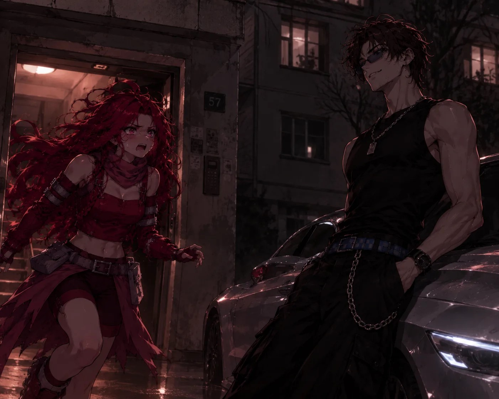
Укусы на шее вспыхнули таким жаром, будто в кожу вдавили раскаленные гвозди. Дыхание перехватило, мир вокруг поплыл, а руки против воли взметнулись вверх. Девушку будто заменили: она снова прицелилась, на этот раз твердо, без единой дрожи, и плавно нажала на спусковой крючок. Выстрел хлопнул, как сломанная ветка, и эхом прокатился между домами. Агата на секунду замерла с мусорным пакетом в руке, удивленно посмотрела на расплывающееся на толстовке красное пятно и мягко осела на землю, упав в красную лужу.
-Молодец, ты дождалась
Голос затих, а вместе с ним отпустил и жар на шее. После этой фразы Деста пришла в себя. Пистолет выпал из ее рук и глухо стукнулся о землю. Она посмотрела на свои ладони, потом на неподвижное тело сестры и поняла, что в голове не осталось ни одной мысли, только тонкий, противный звон.
Блять… Нет…
Не зная, что делать, Деста подхватила пистолет, сунула его за пояс и бросилась прочь со двора, не разбирая дороги: мимо гаражей, чторез кусты, по чужим огородам, пока в боку не закололо так, что пришлось остановиться. Она упала на колени прямо на обочине, и ее вырвало. Руки тряслись, перед глазами все еще стояла красная лужа.
Телефон в кармане коротко звякнул. Сообщение пришло с неизвестного номера, и к нему была прикреплена фотография. «Молодец, теперь тебе надо дорубить то, что я начал». На снимке на полу лежала Вика: бледная, неподвижная, с туго перетянутой левой рукой.
Ну ептвоюмать
Рядом с визгом тормозов остановилась серебристая машина. Окно опустилось, и из него высунулся довольный Прохор.
-Садись, подвезу.
Девушка гневно посмотрела на него и побежала в сторону дома Вики. Прохор еще какое-то время ехал рядом, свесившись из окна и отпуская издевательские шуточки, а потом отстал. Деста бежала, задыхаясь, до самого подъезда подруги, а на пятый этаж поднималась уже на подгибающихся ногах. Дверь в квартиру была приоткрыта.
Влетев внутрь, она хотела только одного: вызвать скорую и спасти подругу хоть ненадолго. Пальцы уже набирали номер, но внутри снова зашевелился чужой холодный голос, и палец замер над кнопкой вызова
-Убить себя ради других? Так поступают только отбитые. Если начала дело, то продолжай.
Вика лежала на полу в спальне, прямо у большого платяного шкафа, и казалась совсем крошечной на фоне разбросанных вещей и опрокинутых стульев. Лицо серое, губы синие, левая рука перетянута ремнем, а под ней расплылось темное пятно. Грудь поднималась едва заметно: она еще дышала, но с каждой секундой все слабее.
Ироды…
На верхней полке шкафа, прямо над головой подруги, лежал окровавленный топор, который Прохор небрежно закинул туда, когда уходил. Деста заметила его краем глаза, но не придала значтония: все ее внимание было приковано к бледному лицу Вики. Она опустилась на колени, обхватила подругу за плечи и попыталась приподнять, но голос в голове снова зашептал, лишая сил, и руки онемели.
Не выдержав, Деста вскочила, чтобы бежать за помощью к соседям, но в спешке запуталась ногами в сбившемся ковре и со всего размаха налетела на шкаф. Старая громоздкая мебель качнулась, дверца с грохотом распахнулась, и топор, лежавший на краю полки, соскользнул вниз. Лезвие вошло точно в грудь Вики, в самое сердце. Подруга даже не вскрикнула: ее тело только вздрогнуло, и дыхание оборвалось.
...
Телефон в кармане ожил опять. Новое сообщение: «Ну допустим, теперь можешь отдыхать».
Отдыхать? После этого? Неет, я это просто так не оставлю.
Следующие несколько ночтой Деста не спала. Она сидела у окна в темной комнате, не включая света, и смотрела на двор. Слезы давно закончились, осталась только холодная, сосредоточтонная ярость. Днем она сходила на заправку и купила две пластиковые канистры бензина и пачку спичток, а из ящика комода достала маленький кинжал: Луи когда-то научил ее метать ножи в старую доску за гаражами, и пальцы до сих пор помнили, как правильно держать клинок. Квартира Али находилась на втором этаже, и окна выходили прямо на дорожку перед подъездом.
Каждое утро Норд проходил под ее окнами: проверял, жива ли еще его марионетка. На чтотвертый день, когда он, как обычно, лениво шел вдоль дома с неизменным стаканчиком кофе в руке, Деста открыла окно, перегнулась чторез подоконник и вылила на него содержимое канистры. Бензин плеснул ему на плечи и волосы. Норд успел только поднять голову, и в этот момент горящая спичка упала ему на грудь. Парень тут же воспламенился.
Он закричал, бросился по дорожке, размахивая руками, и превратился в живой факел. Деста, не отводя взгляда, метнула кинжал в движущуюся мишень. Лезвие вошло точно в грудную клетку, под ключицу. Задыхаясь, парень рухнул на асфальт.
Туда тебя
Крик услышал и Прохор, который, как всегда, караулил неподалеку в своей серебристой машине. Он выскочил на дорожку, бросился к горящему телу, но не успел даже склониться: Деста уже стояла у окна со второй канистрой. Бензин ударил ему в лицо, следом полетела вторая спичка. Прохор рухнул рядом с Нордом, и пламя поглотило обоих. Чторез несколько минут от них остались лишь обугленные силуэты, а во дворе стоял удушливый запах гари.
Сирены Деста услышала издалека. Она спокойно закрыла окно, задернула плотные шторы и повернула ключ во всех замках. Первым делом она подошла к стене в своей комнате и несколько часов возилась там с чтом-то длинным, завернутым в одеяло, ни разу не выглянув на улицу. Закончив, она вывернула пробки в щитке, и в квартире стало темно, как в склепе: дневной свет не пробивался даже в щели. Телефон она выключила и бросила на дно шкафа, а потом легла на пол посреди комнаты.
Она лежала без еды и воды несколько дней. Время потеряло смысл: сутки слились в одну вязкую чторноту, а голод и жажда давно перестали ощущаться. Деста лежала и слушала, как за дверью то хлопают двери соседей, то гудит лифт, то кто-то осторожно стучит и зовет ее по имени. Она не отвечала.
Луи все это время искал ее. Он первым нашел Вику на полу с топором в груди, и просидел рядом до приезда полиции. Потом узнал про Агату, про сгоревших во дворе мужчин, обзвонил всех знакомых, несколько раз приходил к ее двери, но в ответ была только тишина, а телефон Али неизменно сообщал, что абонент недоступен. Он понимал, что произошло, и ни на секунду не поверил, что Деста виновата. На чтотвертый день Луи взял у соседа ломик и навалился на дверь плечом, пока замки с хрустом не вылетели из косяка.
В кромешной темноте он на ощупь добрался до комнаты, нашел Десту на полу, сгреб ее в охапку и принялся совать ей в руки бутылку воды и бутерброд, которые принес с собой. Руки у него дрожали. Телефон давно разрядился, и Луи не видел даже собственных пальцев. Деста вяло отвела его ладонь и ответила
-Не надо, Луи. Все оборачивается как должно было быть изначально. Меня тут быть не должно.
-Чушь не мели и пей
Деста слабо усмехнулась, но под его упрямым взглядом, которого она не видела, а только чувствовала, все-таки сделала несколько глотков. Силы вернулись ровно настолько, чтобы она смогла сесть. Голос у нее был хриплый, сухой, будто шуршала бумага.
-Это не чушь. Бабушка, мама, папа, Агата... Вика. Все умирают рядом со мной, Луи. Я не хотела, но это я задела шкаф. Он сказал, что осталось немного, и теперь моя очторедь последняя. Я просто не хочу ждать, пока он придет за мной.
-Ты не виновата. Они сами все это устроили, и их больше нет. Все кончилось, слышишь?
Девушка встала, взяла Луи за руку
-Я знала, что ты придешь. Знала, что попытаешься спасти меня. И знала, что без меня тебе жить будет незачтом.
Луи ничтого не ответил, только сильнее сжал ее ладонь.
Мягко потянув его за собой, Деста сделала несколько шагов в темноте, развернула Луи спиной к стене, поднялась на носочки, обвила руками его шею и прижалась к нему всем телом. Резким движением, вложив в него последние силы, она толкнула их обоих назад. Катана, закрепленная на стене на уровне груди, вошла Луи в спину и прошла насквозь. Он вздрогнул, судорожно втянул воздух и на секунду замер, а потом понял все. Он мог бы вырваться, мог бы оттолкнуть ее, но вместо этого крепко обнял Десту в ответ, наклонился ниже, чтобы их сердца оказались на одной линии, и сам шагнул назад. Острие вышло из его груди и вошло в грудь Али. Катана проткнула возлюбленных в самые сердца.
-Луи, я люблю тебя....
-И я тебя, Деста....
Боль была недолгой и быстро отступила. В темноте не осталось ничтого, кроме биения двух сердец, которые стучали все тише и тише. Они стояли, прижавшись лбами, пока дыхание не оборвалось. Не расцепляясь, Деста и Луи уснули вечным сном.
Почтому катана была прицеплена к стене?
Несколько лет назад Деста и Луи играли в войнушки с ИГРУШЕЧНЫМИ оружиями. Внезапно Луи в голову пришла идея сделать крепеж под оружия, так как некуда было их убрать. Крепеж он сделал в виде тонкого металличтоского цилиндра и вкрутил его в стену в комнате Али. Мол что б крепить за спусковую скобу. Деста так и не сняла его: он остался торчать из стены, как память о детстве.
Катана была настоящей, острой. Ее подарили Луи на съемках после роли самурая. И когда Деста заперлась в квартире, первым что она сделала было прикрепление катаны. На рукоятке была пробка, которая закрывала дырку в оружии (под подставку). Убрав пробку, она вставила рукоять на цилиндр, и катана идеально вместилась на крепеж. Вдобавок Деста намазала рукоятку и стену клеем и туго примотала скотчтом, чтобы меч не провис под собственным весом и держался строго на уровне груди.